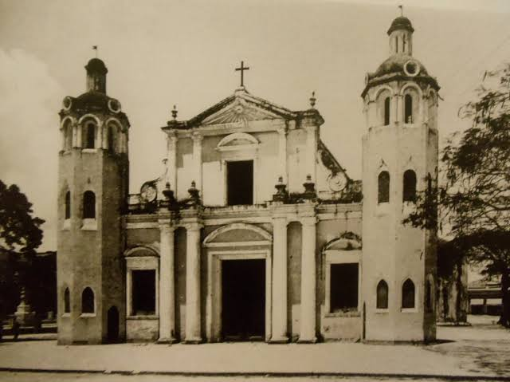

Características
-
Religión oficial:
Era la religión oficial de México.
-
Grandes riquezas:
Poseía grandes extensiones de tierra y riqueza económica.
-
Administración social:
Administraba escuelas, hospitales, asilos y beneficencia.
-
Registro civil:
Registraba nacimientos, matrimonios y defunciones.
-
Privilegios legales:
Contaba con privilegios legales, considerados como fuero eclesiástico.
-
Alianza conservadora:
Mantenía una estrecha relación con los grupos conservadores.
